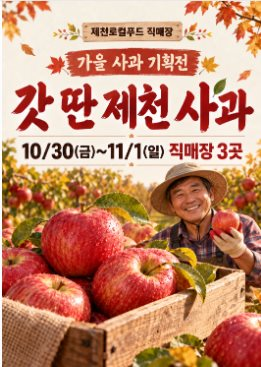
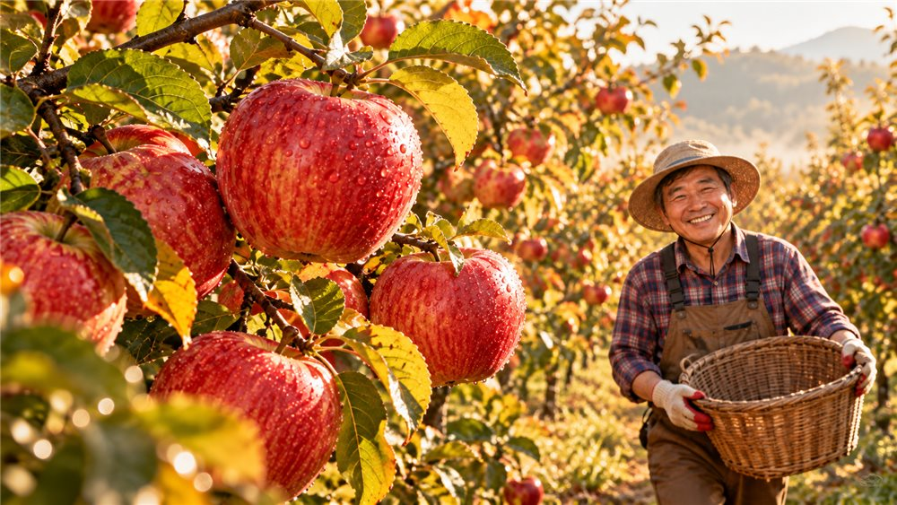
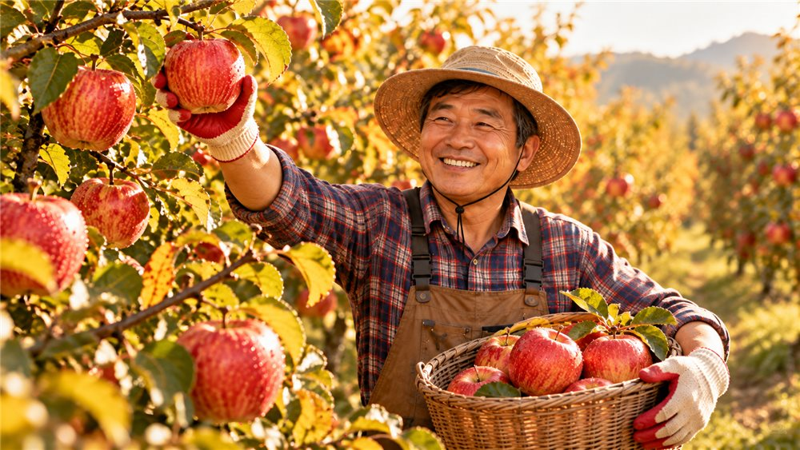
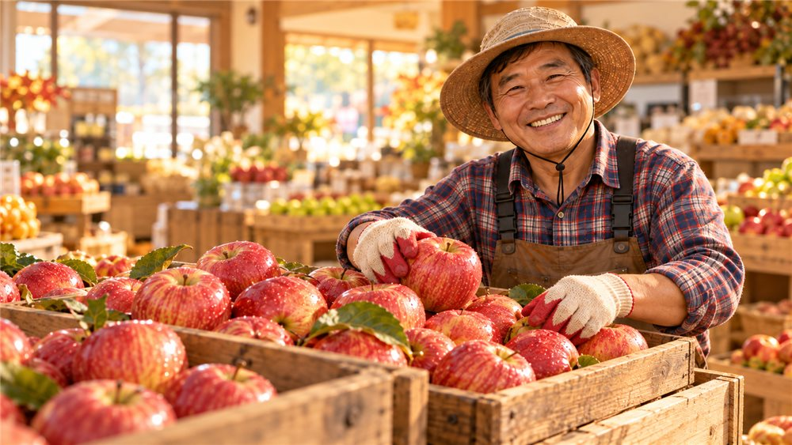
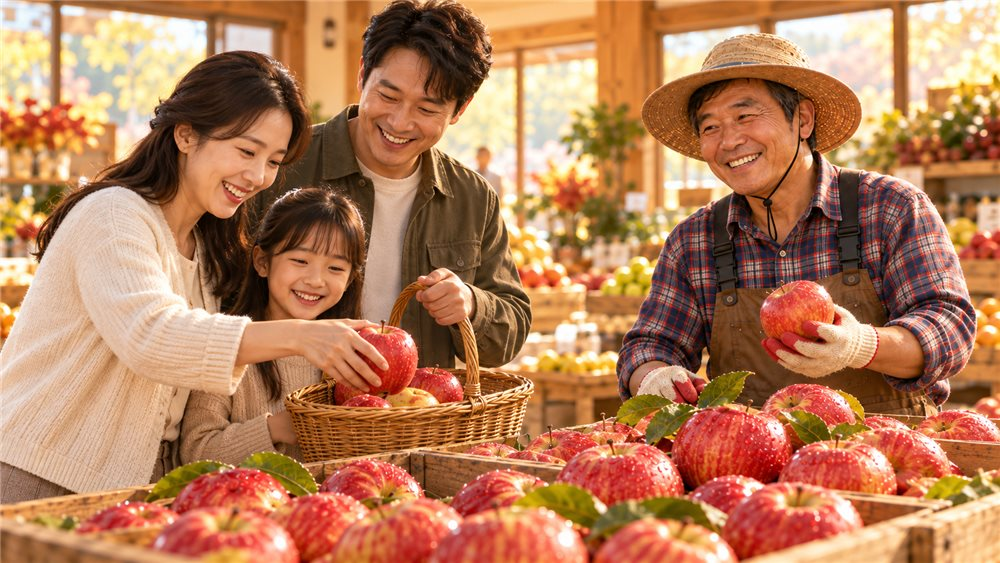
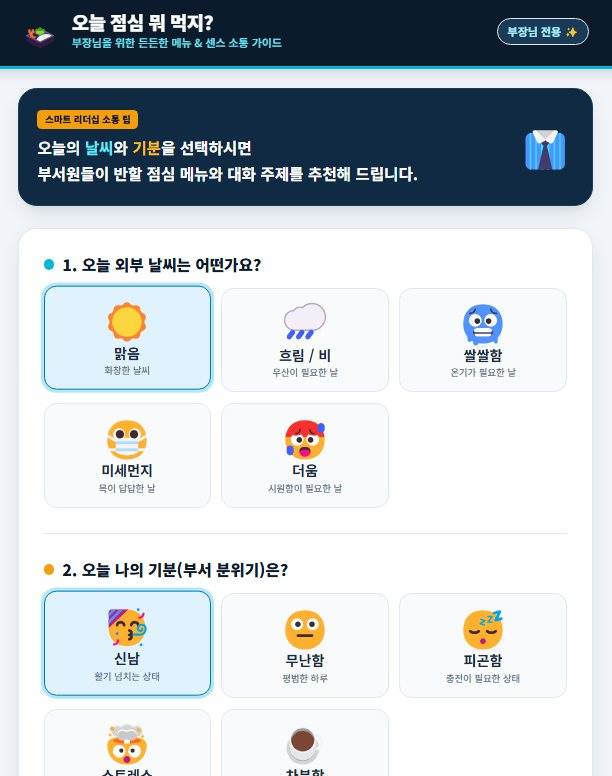

M5제철 꾸러미 구성안 만들기
‘제천로컬푸드 업무비서’ 프로젝트에서 새 대화를 열어 진행 · 무엇을 팔지 정하는 기획 단계 — 다음 단계부터 홍보합니다
1~2인 실속 꾸러미소포장 · 손질 쉬운 채소 위주
4인 가족 꾸러미주간 반찬 재료 · 과일 · 채소 · 계란
제철 선물 꾸러미명절 · 감사 선물 · 대표 과일 · 가공품
※ 꾸러미 구성은 예시입니다
11월 제철 농산물로 꾸러미 3종을 구성해줘. 가격대·구성·추천 대상·안내 문구를 포함하고, 품목은 아래 목록에서만 골라. [이번 달 출하 가능 품목] 사과(부사), 배추, 무, 대파, 감자, 쌀(4kg), 유정란, 꿀, 된장
↓ 같은 대화창에서 이어서
구성안을 표로 정리해줘. 열: 꾸러미 이름·구성 품목·가격대·추천 대상·안내 문구 한 줄
⚠ 확인가격대는 AI가 정한 예시 — 확정 전 담당자 확인
M5제철 사과 홍보 포스터 만들기
우리 조합 포스터로 직접 만들어 봅니다.
- 문구 정하기제목 · 부제 · 기간 · 장소 정하기
- 포스터 생성A4 세로 · 글자 크게 · 따뜻한 분위기
- 글자 확인틀린 글자 · 숫자만 고쳐 달라고 요청
- 활용매장 POP · SNS · 배너 크기로 바꾸기
제천로컬푸드 직매장의 '가을 사과 기획전' 포스터를 A4 세로로 만들어줘. 큰 제목은 '갓 딴 제천 사과', 부제는 '10/30(금)~11/1(일) 직매장 3곳'. 따뜻한 가을 분위기, 글자는 크고 읽기 쉽게. 효능 문구는 넣지 마.
배경을 사과가 열린 가을 사과농장으로 변경하고. 기존 문구와 앞쪽 사과 상자는 유지해줘
사과를 들고 환하게 웃는 농부를 추가해줘

⚠ 주의가격 · 할인율 · 기간은 사람이 확인 · 효능 과장 표현 금지 · 실존 인물 · 다른 회사 로고는 넣지 않기
M54컷 이미지로 홍보영상 만들기 — ChatGPT + Flow
① ChatGPT로 같은 화풍 이미지 4장 → ② Flow 에이전트로 홍보영상 → ③ 확인·수정·다운로드 + SNS 문구(ChatGPT)
- ChatGPT · 4컷 이미지장면 4개 기획 · 같은 화풍 이미지 4장 · 이미지 내려받기
- Flow · 에이전트에이전트 켜기 · 이미지 4장을 소재로 홍보영상 요청
- 마무리영상 확인 · 수정 요청 · 다운로드 · SNS 문구 (ChatGPT)
| 구분 | 확인 내용 |
|---|---|
| Sora | 2026년 4월 웹·앱 서비스 종료 → ChatGPT 단독으로는 영상 생성 불가 |
| Google Flow | 하루 50크레딧 · Lite 10 / Fast 20 크레딧 · 만 18세 이상 · 개인 Gmail 권장 |
※ 2026년 10월 확인 자료 기준이며, 크레딧·정책은 바뀔 수 있습니다
ChatGPT로 4컷 이미지 만들기
컷 1
아침 햇살 속 제천 과수원의 빨간 사과컷 2
농부가 웃으며 사과를 수확하는 모습컷 3
직매장 진열대에 놓인 사과 상자컷 4
장바구니에 사과를 담는 가족 고객제천 가을 사과 홍보영상에 쓸 장면 이미지 4장을 만들어줘. 아래 컷 1~4 순서로 한 장씩, 16:9 가로 비율로. 컷 1 아침 햇살 속 제천 과수원의 빨간 사과 컷 2 농부가 웃으며 사과를 수확하는 모습 컷 3 직매장 진열대에 놓인 사과 상자 컷 4 장바구니에 사과를 담는 가족 고객 4장 모두 같은 화풍(따뜻한 실사 느낌)과 같은 농부 인물을 유지하고, 이미지 안에 글자는 넣지 마.
※ 슬라이드의 ‘위의 컷 1~4 순서로’를 복사해서 바로 쓸 수 있도록 컷 설명을 프롬프트 안에 넣었습니다.




TIP4장의 색감·인물이 같아야 영상이 자연스럽게 이어집니다 · 이미지 속 한글 글자는 깨지기 쉬움 → 자막은 나중에
M5Flow 에이전트로 홍보영상 완성하기
구글 계정으로 로그인하면 Flow의 메인 홈 → ‘+ 새 프로젝트’ 버튼으로 새 작업을 시작합니다.
- Google Flow 접속새 프로젝트 (개인 Gmail)
- 에이전트 켜기프롬프트 상자에서 ‘에이전트’ 켜기
- 소재 추가4컷 이미지를 프롬프트 상자로 끌어 소재로 추가
- 프롬프트 입력 → 생성아래 프롬프트 입력
- 결과 확인수정 요청 → 다운로드
첨부한 4장의 이미지를 1→4 순서로 이어서 제천 사과 홍보영상을 만들어줘. 장면마다 카메라가 천천히 움직이고, 밝고 따뜻한 분위기의 음악을 넣어줘.
TIP크레딧 절약: Lite 모델로 먼저 시험 · 한 번에 안 이어지면 → 컷마다 8초 영상을 만든 뒤 장면을 이어 붙이기
Flow 홍보영상 결과 예시
M6바이브코딩이란?
코드를 몰라도 말로 설명하면 AI가 앱을 만들어 주는 방식
- 말로 설명어떤 앱인지 · 원하는 기능 설명
- AI가 코드 작성Canvas에서 HTML 코드 자동 생성
- 미리보기 실행Canvas 화면에서 바로 실행 · 확인
- 말로 수정‘버튼 크게’ ‘상황 추가’
오늘 만들 앱① 오늘 점심 뭐 먹지? ② 신입 직원 고객응대 훈련 앱
사용 도구 Gemini canvas (입력창 아래 ‘Canvas’ 선택) · 코딩 지식은 필요 없음
사용 도구 Gemini canvas (입력창 아래 ‘Canvas’ 선택) · 코딩 지식은 필요 없음
ChatGPT – 사이트
웹사이트·웹앱·게임을 직접 만들고 호스팅·수정·공유까지 해 주는 “노코드 웹 빌더” 기능입니다. 채팅으로 말하듯이 설명만 하면 사이트가 만들어지고 URL로 공유됩니다.
M6바이브코딩 맛보기 — 오늘 점심 뭐 먹지?
Gemini canvas 기능 이용하기 (속도가 빠름)
다음과 같은 웹앱을 만들어줘. 사용자가 '오늘의 날씨'와 '오늘의 기분'을 버튼으로 선택하면 다음 내용을 추천하는 웹앱을 만들어줘. • 오늘의 점심 메뉴 1개 • 부서원들과 나눌 수 있는 가벼운 대화 주제 1개 웹앱 이름은 '오늘 점심 뭐 먹지?'로 작성해줘. 주요 사용자는 [부서원들과 점심 메뉴를 정하고 자연스럽게 소통하고 싶은 부장님]이다. 전체 분위기는 [친근하지만 지나치게 가볍지 않은 직장인용 스타일]로 구성하고, 인터넷 브라우저에서 바로 실행할 수 있는 참여형 웹앱으로 만들어줘.
UI를 가독성 있게 변경해줘. 이모티콘은 크게 해줘. 메뉴가 추천되면 제천시 맛집도 추천하고, 음성으로 읽어줘.
⚠ 확인추천된 맛집은 실제 가게인지 확인

M6[심화] 신입 고객응대 훈련 앱 (Gemini canvas)
미션 1에서 만든 클레임 응대 매뉴얼을 함께 붙여넣으면 더 정확해집니다.
1
시든 채소 환불2
“마트보다 비싸요”3
품절 항의4
원산지 의심5
꾸러미 배송 지연6
계산 실수고객 상황 6가지 (예시) — 우리 매장 상황으로 바꿔도 됩니다
제천로컬푸드 직매장 신입 직원을 위한 '고객응대 훈련 앱'을 만들어줘. 고객 상황 6개(시든 채소 환불, '마트보다 비싸요', 품절 항의, 원산지 의심, 꾸러미 배송 지연, 계산 실수)마다 응대 선택지 3개(좋음·보통·나쁨)와 이유를 담은 피드백을 넣어줘. 화면은 시작 → 상황 카드 → 응대 선택·피드백 → 결과(총점·등급·다시하기) 순서로, 글씨는 크게, 버튼은 누르기 쉽게 만들어줘. (클레임 응대 매뉴얼이 있으면 아래에 붙여넣기)
Gemini에 붙여넣기미션 1 결과를 복사해 두지 않았다면 클레임_응대_매뉴얼_예시(가상).docx ↓ 내용을 붙여넣으세요.
+보너스 실습 · Canva로 판매전 현수막 만들기
ChatGPT 일반 새 대화 → 도구 메뉴에서 Canva 선택 → 아래 프롬프트 입력
Canva로 가로 300cm × 세로 90cm 현수막을 만들어줘. · 제목: 2026 가을 제철 농산물 특별 판매전 · 기간: 11. 12.(목) ~ 11. 20.(금) · 장소: 제천로컬푸드 직매장 · 온라인몰 · 혜택: 전 품목 15% 할인, 5만 원 이상 구매 시 장바구니 증정 사과·배추가 어울리는 따뜻한 가을 색감으로, 멀리서도 잘 보이게 글씨를 크게 해줘.